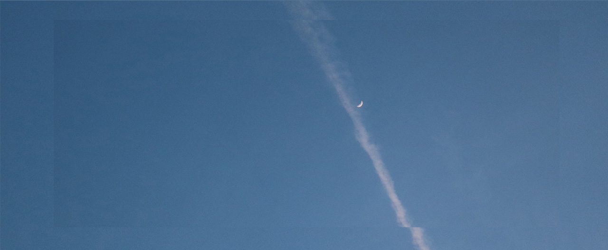

The mysterious storis of the moon.
Shall we get started?
The mysterious storis of the moon.
Shall we get started?
About the Moon
달(영어 : Moon)은 행성인 지구를 도는 천체이며 지구의 유일한 영구적인 자연 위성이다. 달은 태양계에서 5번째로 큰 자연 위성이며, 행성의 크기와 관련하여 자연 위성들 중 가장 큰 위성이다. 달은 태양계에서 목성 위성 이오(Io) 이후에 밀도가 알려진 위성들 중 두 번째로 밀도가 높은 위성이다. 그림 1은 달의 모습을 나타낸 그림이다.
달은 지구가 생성된 지 얼마 되지 않은(지구의 경우 약 45억 6700만 년 전) 약 45억 1천만 년 전에 형성되었다고 추정하고 있다. 가장 널리 받아들여지는 가설은 달이 지구와 화성 크기의 테이아(Theia) 사이의 거대한 충격 이후 남겨진 파편으로 형성되었다는 것이다. 달은 지구와 동시에 회전하기에, 지구에 항상 같은 면을 보여준다.
달의 평균 궤도 거리 즉, 지구 중심으로부터 달의 중심까지 거리는 384,402km(238,856 mi)로 이는 지구 직경의 약 30배에 달한다. 이는 지구에서 태양까지 거리의 400분의 1에 해당하며, 달의 지름은 태양의 400분의 1인 3500km이다. 이를 통해 달의 겉보기 크기는 태양의 겉보기 크기와 같다는 것을 알 수 있다. 따라서 일식 중 달은 거의 정확하게 태양을 덮게 된다. 그림 2는 달이 태양을 완전히 가리는 개기일식(total solar eclipse) 그림이다. 일식에는 달이 태양을 완전히 가리는 개기일식과 완전히 가리지 못하고 태양의 일부분만 가리는 부분일식(partial solar eclipse)이 있다. 지구의 그림자가 달을 가리는 월식의 경우에도 달 전체가 가려지는 개기월식(total lunar eclipse)와 일부분만 가려지는 부분월식(partial lunar eclipse)으로 나뉘게 된다.

The ebb and flow of the tide are due to the gravitational pull of the moon.
달과 태양의 인력에 의한 조수 간만의 차로 생기는 해수 운동으로, 하루에 각각 두 번의 썰물과 밀물이 발생한다. 조수 간만의 차를 조차라고 하는데, 조류는 조차가 클수록 빨리 흐르며 좁은 해협이나 수로를 통과할 때 유속이 빨라진다. 세계에서 조차가 가장 큰 곳은 북아메리카 동안의 펀디 만으로 사리 때의 조차가 최고 16m에 달한다고 한다. 우리나라의 서해안도 조차가 큰 지역으로서, 특히 태안 반도 가로림 만에서는 최고 11m의 조차가 발생하고 있다. 이렇게 큰 조수 간만의 차는 조력 발전에 유리한데, 이미 프랑스와 캐나다 등 선진국에서는 조력을 이용한 발전을 하고 있다.
밀물이 되어 바닷물의 높이가 가장 높아졌을 때를 '만조', 썰물이 되어 바닷물의 높이가 가장 낮아졌을 때를 '간조'라 한다. 이 때의 높이 차를 '간만의 차' 또는 '조차'라고 한다. 조류는 모든 바다에서 공통적으로 나타나는 현상이지만, 우리 나라의 경우 수심이 얕은 남서해안 지역에서는 이러한 간만의 차가 다른 지역에 비해 더 크다
또한 같은 지역에서도 시기에 따라 간만의 차는 다르게 나타난다. 달은 지구 둘레를 공전하고 지구는 태양 둘레를 공전한다. 따라서 지구에 영향을 미치는 달과 태양이 나란하게 위치할 때는 지구에 미치는 인력이 더욱 커지고, 이에 따라 간만의 차도 더 크다.
간만의 차가 가장 큰 때는 '사리'로, 매달 음력 보름이나 말일 무렵에 나타난다. 또 달과 태양이 수직을 이루고 있어 간만의 차가 가장 작을 때는 '조금'으로, 매달 음력 7~8일(상현)이나 음력 22~23일(하현) 무렵에 일어난다. 조류가 활발하게 일어나는 지역에서는 갯벌이 발달한다. 조류에 의해 나타났다 사라지는 갯벌은 온도와 수분 공급 등 환경 변화가 심하다. 따라서 갯벌은 독특한 생태계를 형성하고 있으며, 연안 어업의 중요한 부분을 차지한다.
기조력
지구가 달보다 크기 때문에 지구와 달의 공통 질량 중심은 지구 내부에 있게 된다. 이 지점을 중심으로 지구와 달이 회전 운동을 하면서 원심력이 생기게 되는데, 이 힘과 달의 인력 차이가 기조력이다. 기조력의 크기는 천체의 크기에 비례하고 천체까지의 거리의 세제곱에 반비례한다. 따라서 달은 작지만 가깝기 때문에 달에 의한 기조력은 태양의 약 2배가 된다. 이 기조력에 의해 달을 향한 쪽과 그 반대쪽에서 해수면의 높이가 가장 높은 만조가 된다

Why does the moon change shape every night?
매일 밤하늘을 바라보면 달의 모습이 대략 한 달을 주기로 변화하는 것을 볼 수 있다. 이를 달의 위상변화라 하며, 달의 공전에 의해 달 표면 중 밝은 부분이 변화하는 모습이다. 달 표면의 밝은 부분의 모양은 지구에서 본 달과 태양의 각도에 의해 결정된다. 태양과 달의 황경차를 달의 위상으로 정의하고, 황위차는 매번 다르기 때문에 무시한다. 달의 위상은 본질적으로는 각도이나 월령(달의 위상을 1일 단위로 표시한 것)과의 비교를 쉽게 하기 위해 1주를 360도 대신 28로 환산한 값으로 표시하기도 한다.
달은 스스로 빛을 발하지 못하고 태양으로부터 빛을 받아 반사하기 때문에 달의 겉보기 밝기와 그 모습은 태양·달·지구의 상대적인 위치에 따라 변한다. 지구에서 보아 달이 태양과 지구 사이에 있을 때 달은 그 뒷면만 햇빛을 받아 빛나고 지구에서 보이는 부분은 어둠에 잠긴다. 이때를 삭(또는 신월)이라고 한다. 달이 태양으로부터 각거리 90°떨어졌을 때에는 월면의 서쪽 반만 보이는데, 이때를 상현(上弦)이라고 하며, 180°떨어졌을 때, 즉 달과 태양이 지구를 사이에 두고 반대쪽에 위치할 때에는 달의 전면이 햇빛을 받아 빛나는데, 이를 망(또는 만월)이라고 한다.
또한, 상현과 반대로 달의 방향이 태양으로부터 서쪽으로 90°떨어지면 월면의 동쪽 반만 보이는데, 이때를 하현(下弦)이라고 한다. 달의 삭망의 정도는 삭의 순간부터 경과한 시간을 일단위(日單位)로 나타낸 월령(月齡)으로 나타낸다. 삭에서 삭까지의 시간을 삭망월(朔望月)이라고 하며, 그 주기는 평균 약 29.53일이다
음력 초하루 (삭 0° = 0)
상현 (90° = 7)
보름달 (망。180° = 14)
하현 (270° = 21)